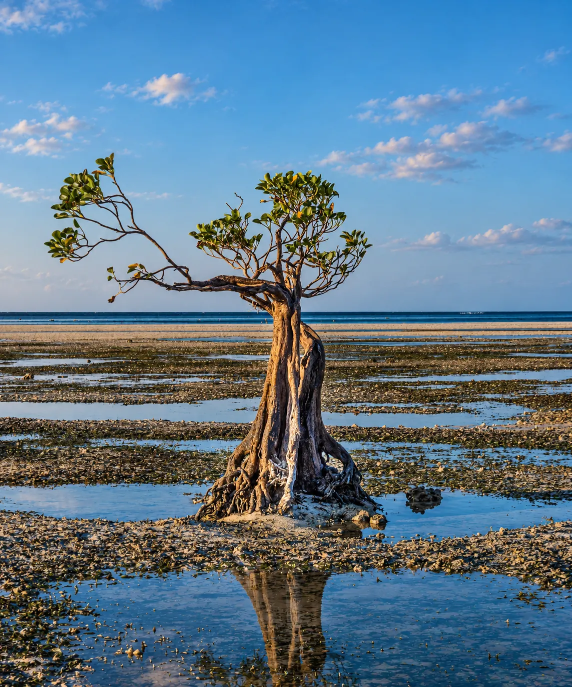

Découvrir Sumba · Par thème
Les cascades de Sumba
8 cascades, du Centre à l'Est de l'île, entre bassins accessibles et sites encore confidentiels.
Découvrir Sumba · Par thème
8 cascades, du Centre à l'Est de l'île, entre bassins accessibles et sites encore confidentiels.
Sumba compte parmi les îles les plus riches d'Indonésie en cascades encore préservées — la plupart nichées au bout de pistes qui se méritent. Voici les 8 que nous recommandons, classées par zone, avec pour chacune l'accès, la difficulté et le meilleur moment pour y aller.
Centre
La plus haute cascade de la province (90m), accès facile.

Centre
Trois chutes distinctes, site sacré Marapu.
Ouest
Nichée au milieu des rizières, source mystérieuse.
Ouest
30m de haut, alimente une installation hydroélectrique locale.

Ouest
Cascade cachée dans les rizières, grotte à l'histoire de guerre.

Est
Surnommée le Grand Canyon de Sumba.

Est
Bassin turquoise, légende du bain des anges.
Est
Traversée de rivière en chemin, encore confidentielle.